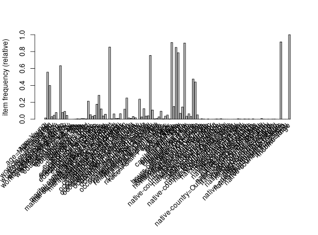
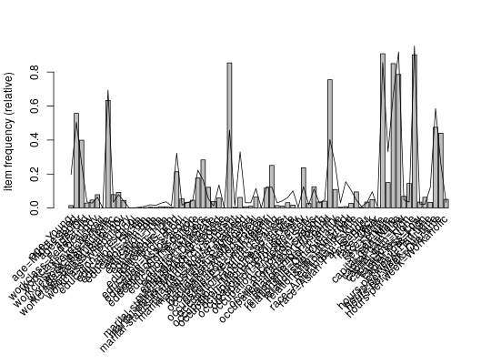
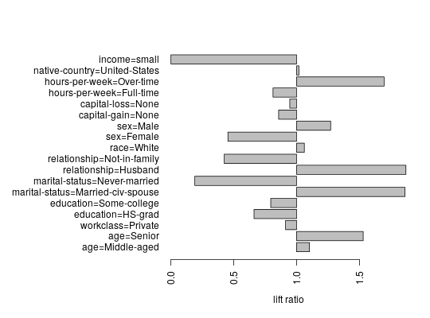

Provides the generic function itemFrequencyPlot and the S4 method to
create an item frequency bar plot for inspecting the item frequency
distribution for objects based on itemMatrix (e.g.,
transactions, or items in itemsets
and rules).
itemFrequencyPlot(x, …)
# S4 method for itemMatrix
itemFrequencyPlot(x, type = c("relative", "absolute"),
weighted = FALSE, support = NULL, topN = NULL,
population = NULL, popCol = "black", popLwd = 1,
lift = FALSE, horiz = FALSE,
names = TRUE, cex.names = graphics::par("cex.axis"),
xlab = NULL, ylab = NULL, mai = NULL, …)
barplot from possible arguments)."weight" in transactionInfo?support. If no population is given, support is calculated
from x otherwise from the population. Support is interpreted relative
or absolute according to the setting of type.topN
items with the highest item frequency or lift (if lift = TRUE).
The items are plotted ordered by descending support. x; if x
is a segment of a population, the population mean frequency for
each item can be shown as a line in the plot.x than in population.horiz = FALSE (default),
the bars are drawn vertically. If TRUE, the bars are
drawn horizontally.A numeric vector with the midpoints of the drawn bars; useful for adding to the graph.
itemFrequency,
itemMatrix-class
data(Adult) ## the following example compares the item frequencies ## of people with a large income (boxes) with the average in the data set Adult.largeIncome <- Adult[Adult %in% "income=large"] ## simple plot itemFrequencyPlot(Adult.largeIncome)## plot with the averages of the population plotted as a line ## (for first 72 variables/items) itemFrequencyPlot(Adult.largeIncome[, 1:72], population = Adult[, 1:72])## plot lift ratio (frequency in x / frequency in population) ## for items with a support of 20% in the population itemFrequencyPlot(Adult.largeIncome, population = Adult, support = 0.2, lift = TRUE, horiz = TRUE)